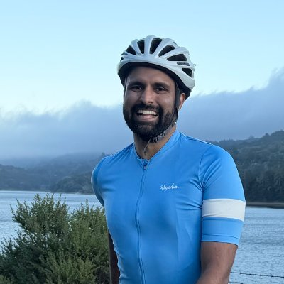
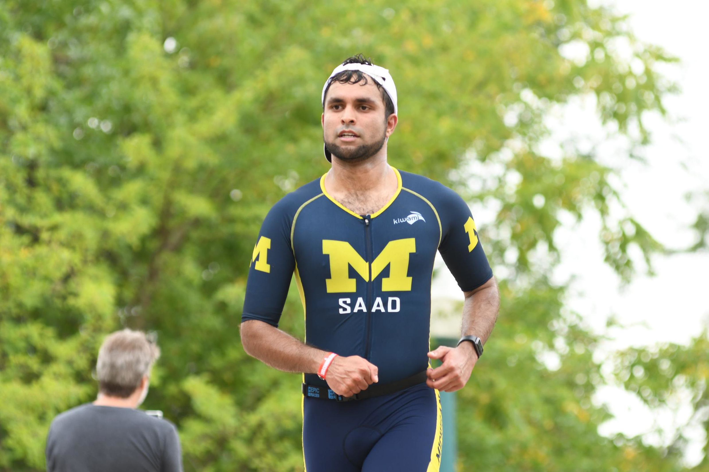

Mohammad Saad
Senior Software Engineer
📍 Seattle, WA
About
Software engineer with a background spanning robotics perception, computer vision, SLAM, and cloud infrastructure. I like working end-to-end — from bare-metal systems to production pipelines — and thrive at the intersection of algorithms and infrastructure.
Outside of Engineering I'm a long-course triathlete and Arabic student, having run several Ironman triathlons and studying Quranic Arabic.
Gallery

Milky Way over Bixby Creek Bridge, CA
Star Trails over Shark Fin Cove, Davenport, CA

Ironman 70.3 Wisconsin Run
Patents & Publications
System and Method to Facilitate Calibration of Sensors in a Vehicle
2D to 3D Line-Based Registration with Unknown Associations via Mixed-Integer Programming
Systems and Methods for Locating a Mobile Phone in a Vehicle
Resume
Zoox - Senior Software Engineer
- Perception / Fleet Mapping -- building maps for self-driving cars from a variety of sources
Amazon — Senior System Development Engineer
- Technical lead for the Tech Transformation group in Amazon Robotics
- Led a group of 5 engineers to develop solutions at the pre-con and pre-live deployments
- Optimized quality control processes, rewriting and training new vision QC models to inspect 1m+ containers across 15 warehouses
- Built novel solutions for point cloud segmentation, reducing time to segmentation by 50%
AKASA — Software Engineer
- Led end-to-end development of distributed healthcare document-processing systems spanning retrieval, storage, generation, and persistence.
- Refactored Windows provisioning infrastructure, reducing build time by 60x and cutting AWS spend by roughly $200k/year.
- Shipped core platform capabilities including fair queueing, multi-client retrieval, DB-backed document ETL, CI pipelines, and regression test frameworks.
- Built production observability with Grafana, Prometheus, and OpenSearch to support 24/7 internal service uptime.
- Mentored junior engineers and helped establish cleaner service architecture patterns across the platform.
Toyota Research Institute — Software Engineer
- Owned calibration and sensor-fusion systems for LiDAR, radar, and camera stacks on autonomous vehicle platforms.
- Developed GNSS-feature fusion for urban localization, reducing cold starts in GPS-denied areas by up to 10 minutes across Japan and North America deployments.
- Tuned and deployed perception pipelines using Kalman filters, particle filters, odometry tuning, and sensor uncertainty modeling.
- Built evaluation tooling for post-drive sensor calibration analysis, enabling faster validation after vehicle data collection.
- Served as a platform-wide code reviewer across perception, planning, and control for a 200+ person autonomous vehicle organization.
Iris Automation — Software Engineer
- Built and deployed drone collision-avoidance software using computer vision and ROS.
- Developed perception components for onboard autonomy systems operating under real-time flight constraints.
Skills
C++Python
AWS/CDK
SLAM / Factor GraphsLiDAR / Point Clouds
Computer VisionML Deployment
PyTorchKubernetes / k8s
Docker
Education
M.S. Robotics
University of Michigan, Ann Arbor
2020 – 2021
GPA: 3.96 / 4.0
B.S. Electrical Engineering
University of Illinois at Urbana-Champaign
2013 – 2016
Undergraduate Thesis: Guided Filters for Depth Image Enhancement — Advisor: Prof. Minh Do